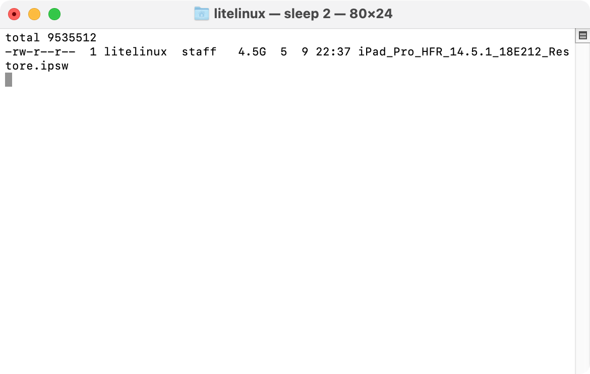

最近為了解除iPadOS越獄，我將iPad連上電腦，並準備下載更新。殊不知，因為線接觸不良，在下載更新時與iPad斷了連線。在連回電腦後，Mac上只有顯示「您的Mac正在下載iPad的軟體」，原本在下面的進度條卻不見了。
↑從某討論串偷個圖，大概長這樣。
Google一下之後發現好東西：在一個蘋果網站的討論串有其他人碰到這個問題，解方則是：（從網站複製過來的）
while true
do
clear
ls -lhrt ~/Library/iTunes/iPhone\ Software\ Updates
sleep 20
done
顯示畫面如下：
↑終端機畫面會在一定的時間更新。
自從MacOS更新上Catalina，iOS裝置改由Finder管理後，這個問題就存在了；到了現在的Big Sur，依然沒有改善。可憐哪Apple。